Final implementation screenshots for /start, /home, /body redesign with chapter-scroll fix and organ verification.
Repository: rezoroyone-dev/orkod-review — branch visual-review-final
Raw base URL: https://raw.githubusercontent.com/rezoroyone-dev/orkod-review/visual-review-final/orkod-visual-overhaul/
Inventory: 20 screenshots — start: 4, home: 6, body: 10
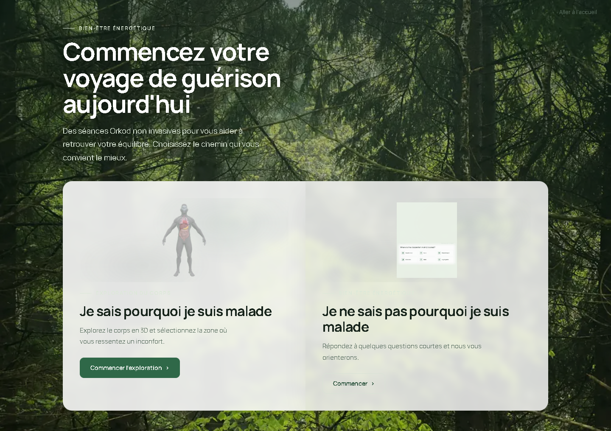
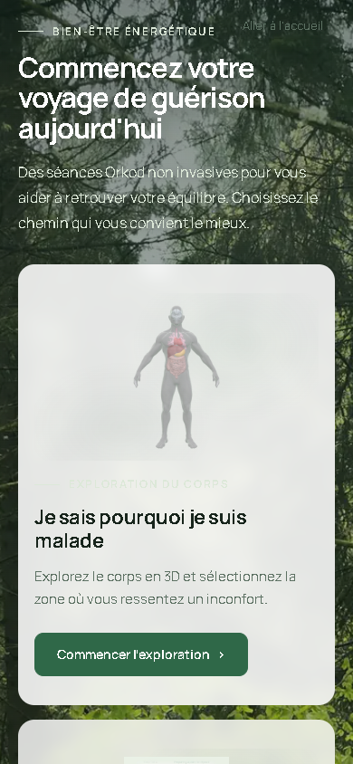
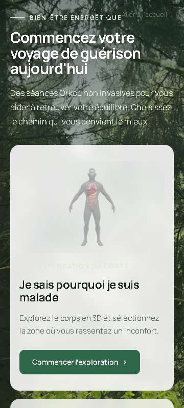
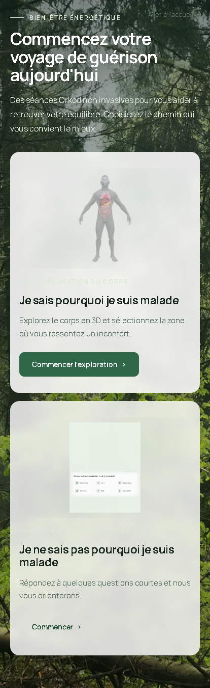
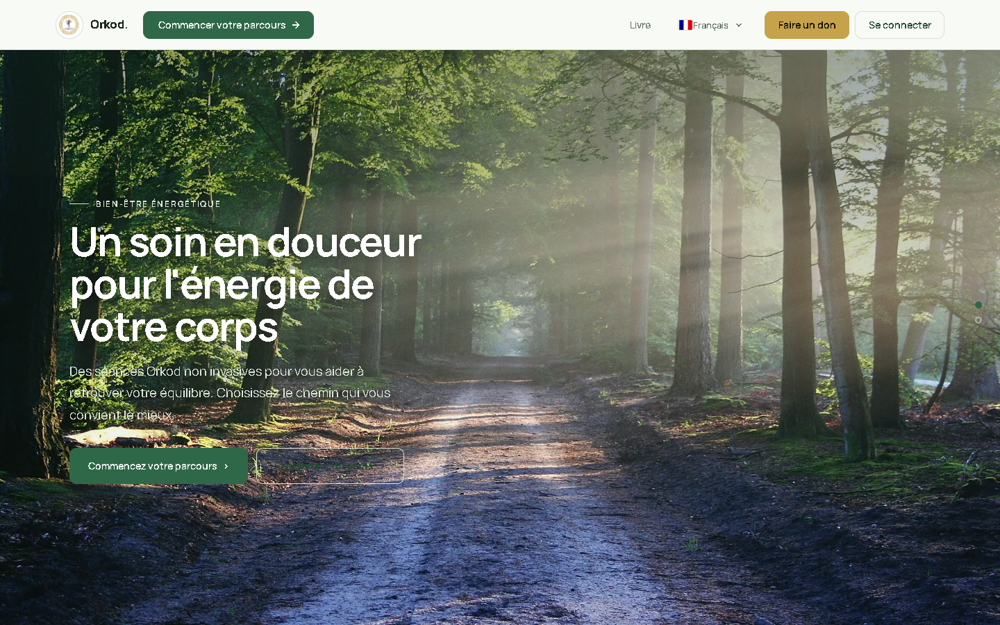
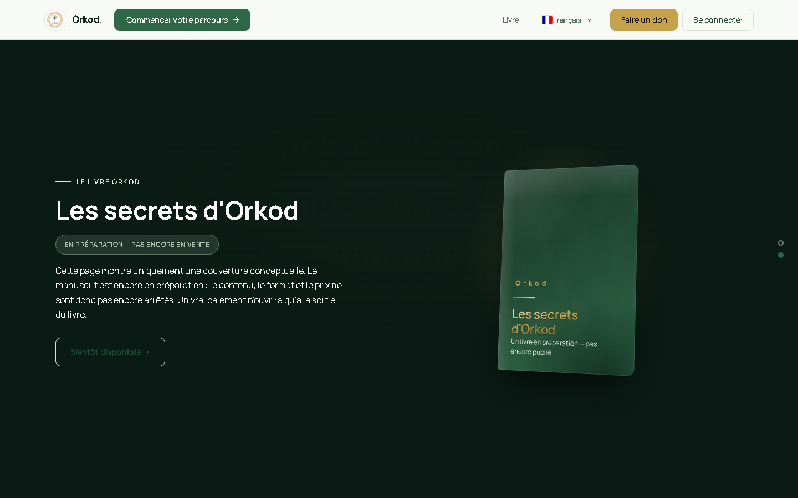
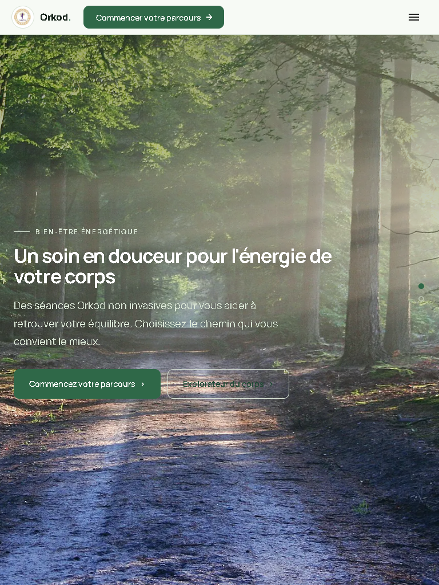
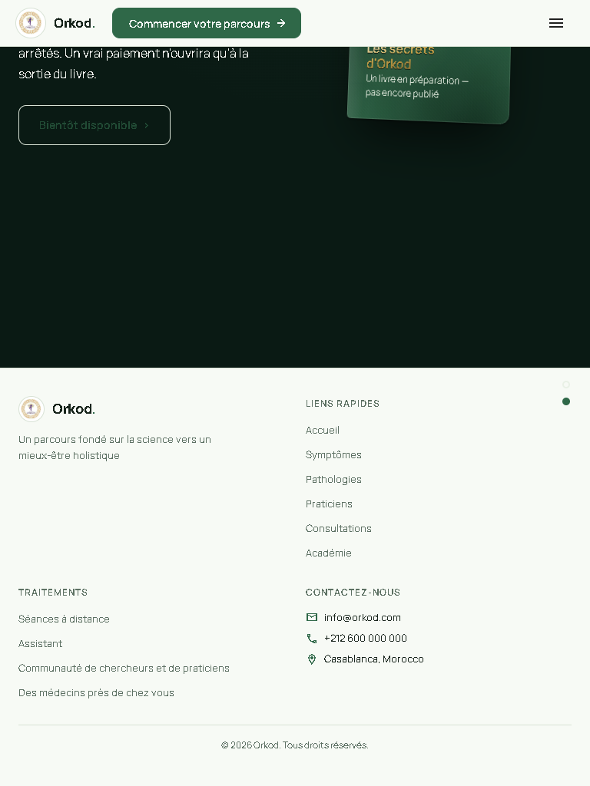
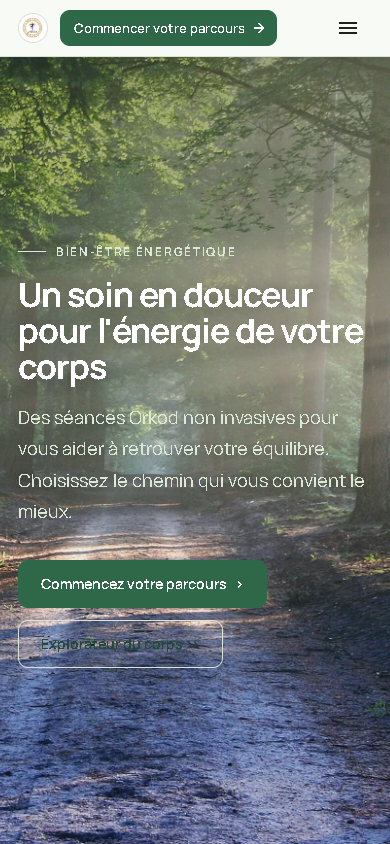
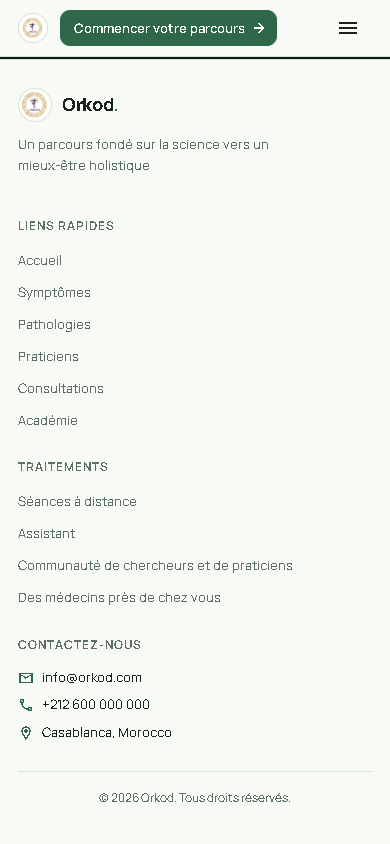
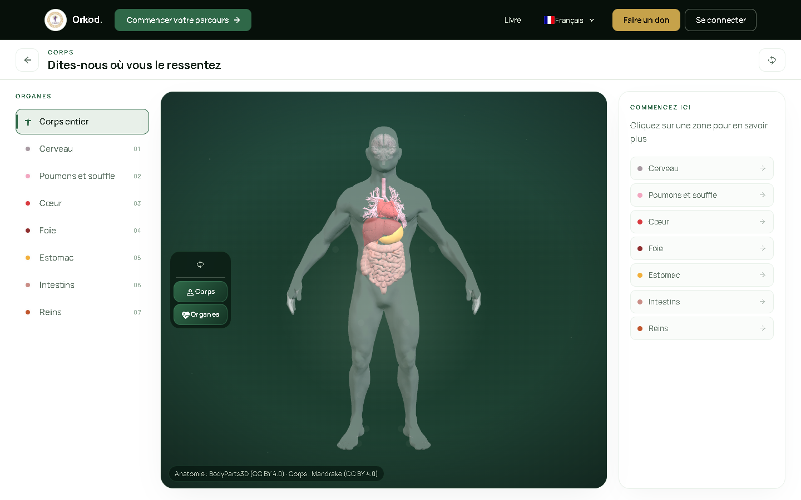
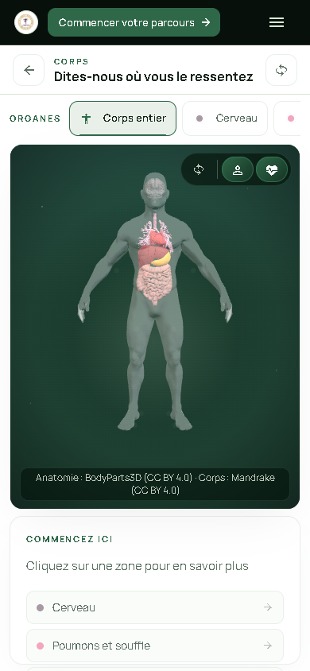
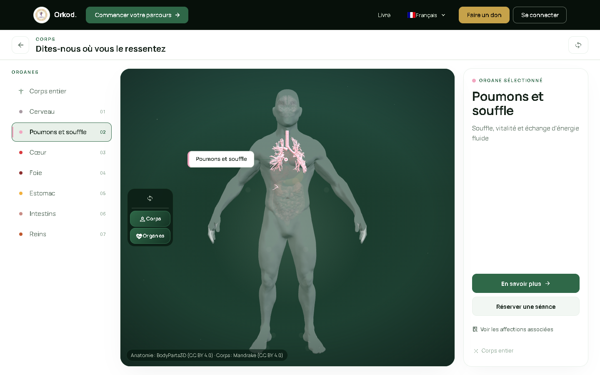
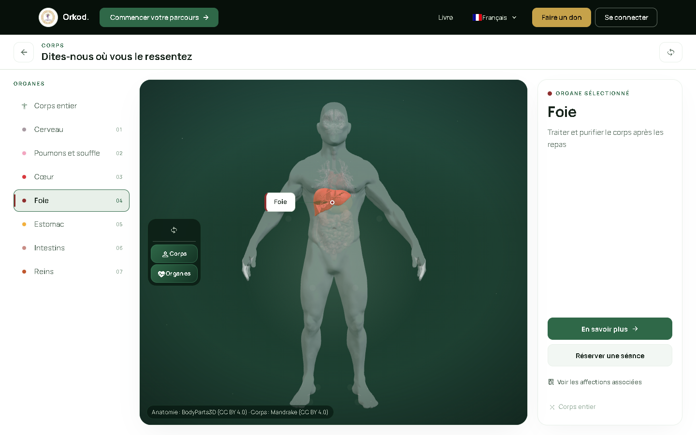
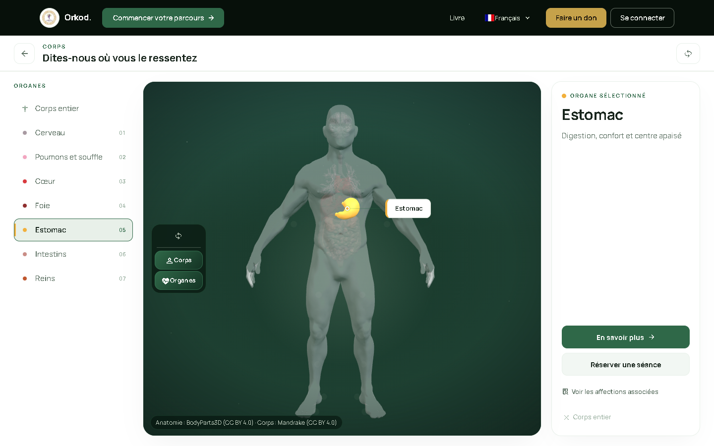
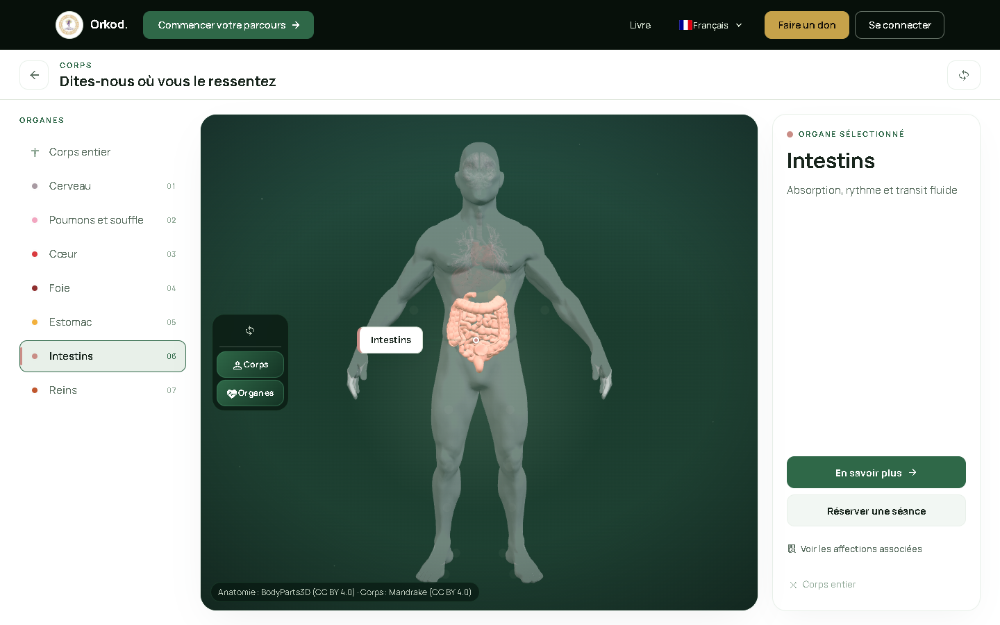
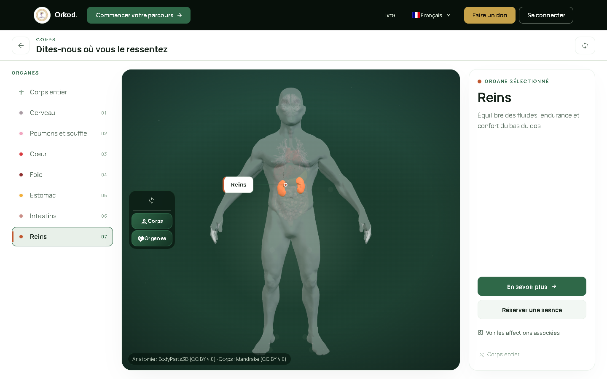
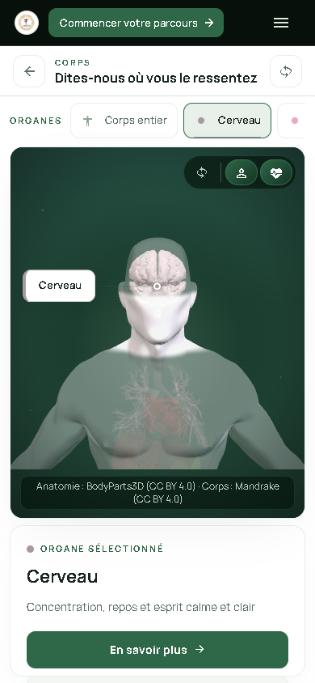
| Check | Result | Details |
|---|---|---|
| /start heading visible on load | PASS | All viewports |
| /start CTAs visible without hover | PASS | "Commencer l'exploration" → /body, "Commencer" → /quiz. Opacity 1, visibility visible. |
| /start no horizontal overflow | PASS | Mobile 390/360/414 |
| /start anatomical preview contained | PASS | object-fit: contain, no edge clipping |
| /home chapter 1 heading visible | PASS | Immediately visible on load |
| /home scroll snap to ch2 | PASS | scrollTop=828 on desktop, scrollTop=787 on mobile (390×844) |
| /home footer reachable | PASS | scrollTop=1192, footer visible on desktop |
| /home no clipping at ch2 top | PASS | Chapter 2 heading at 352px from viewport top, fully visible |
| /home scrollback to ch1 | PASS | scrollTop=0 after reverse scroll |
| /body 3D model ready | PASS | Canvas found, WebGL context active, .human3d--ready class present |
| /body all 7 organs verified | PASS | Brain, lungs, heart, liver, stomach, intestines, kidneys — each with correct active selector and detail panel title |
| /body organ deselect | PASS | Whole-body button restores default state |
| /body default no organ pre-selected | PASS | Whole body active, no detail title on fresh load |
| /body distinct screenshots per organ | PASS | All 7 organ screenshots have unique SHA-256 hashes |
| Typecheck | PASS | npx vue-tsc --noEmit — no errors |
| Production build | PASS | npx vite build — 150 PWA entries |
| Frontend non-integration tests | PASS | 166/166 in 16 test files; Pagination (3/6) fail only due to missing TEST_ADMIN_PASSWORD env var |
| Child safety guard | PASS | moderation.safety.test.ts 10/10 — homme_perpel.png removed from LandingPage.vue import |
| Integration tests | SKIPPED | *.integration.test.ts require backend at localhost:9091 — environmental, pre-existing |
Raw image URLs: https://raw.githubusercontent.com/rezoroyone-dev/orkod-review/visual-review-final/orkod-visual-overhaul/<filename>